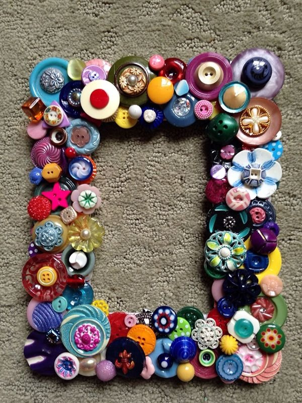
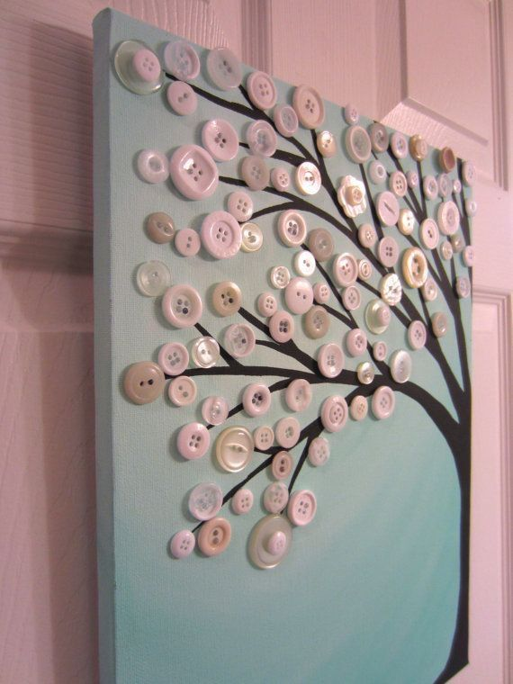
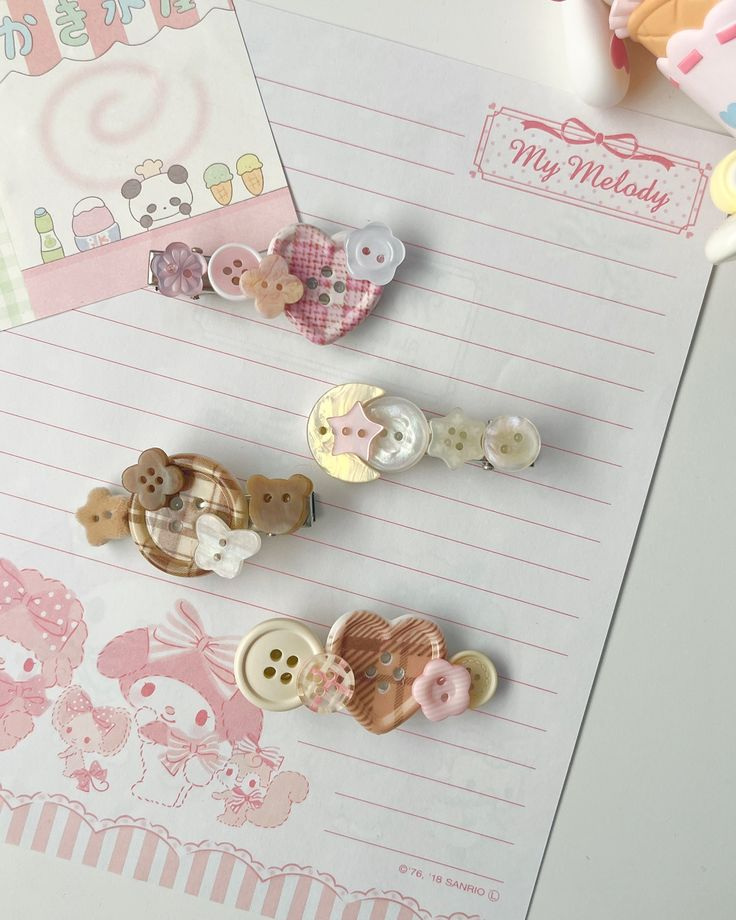

Malzemeler:
• Eski bir fotoğraf çerçevesi
• Düğmeler (farklı boyutlarda ve renklerde)
• Yapıştırıcı
• Boya (isteğe bağlı)
Adımlar:
1- Eski bir fotoğraf çerçevesini al ve istersen boyayarak yenileyebilirsin.
2- Düğmeleri çerçevenin etrafına istediğin düzende yerleştir. Farklı boyutlarda düğmeler, ilginç bir görünüm sağlar.
3- Düğmeleri dikkatlice yapıştır.
4- Yapıştırıcı kuruduktan sonra, çerçeveye fotoğrafını yerleştir.

Malzemeler:
• Minik çerçeve
• Farklı renklerde düğmeler
• Yapıştırıcı
• Küçük tuval veya sert karton
Adımlar:
1- Küçük bir tuval ya da sert karton al.
2- Çerçeveyi tuvalin etrafına yerleştir ve sabitle.
3- Düğmeleri farklı renk ve büyüklükte sıralayarak ilginç desenler oluştur.

Malzemeler:
• Büyük düğmeler
• Saç tokası
• Yapıştırıcı (süper yapıştırıcı veya sıcak silikon)
• Boncuk/dantel (isteğe bağlı)
Adımlar:
1- Farklı renk ve boyutlarda düğmeler seçin.
2- Tokaya nasıl yerleştireceğinizi belirleyin (örneğin, sıra ya da desen).
3- Düğmelerin arkasına yapıştırıcı sürüp tokaya yerleştirin.
4- Yapıştırıcının kurumasını bekleyin ve toka hazır!
Düğmeleri farklı şekillerde kombinleyerek özgün bir toka tasarımı yaratabilirsin.